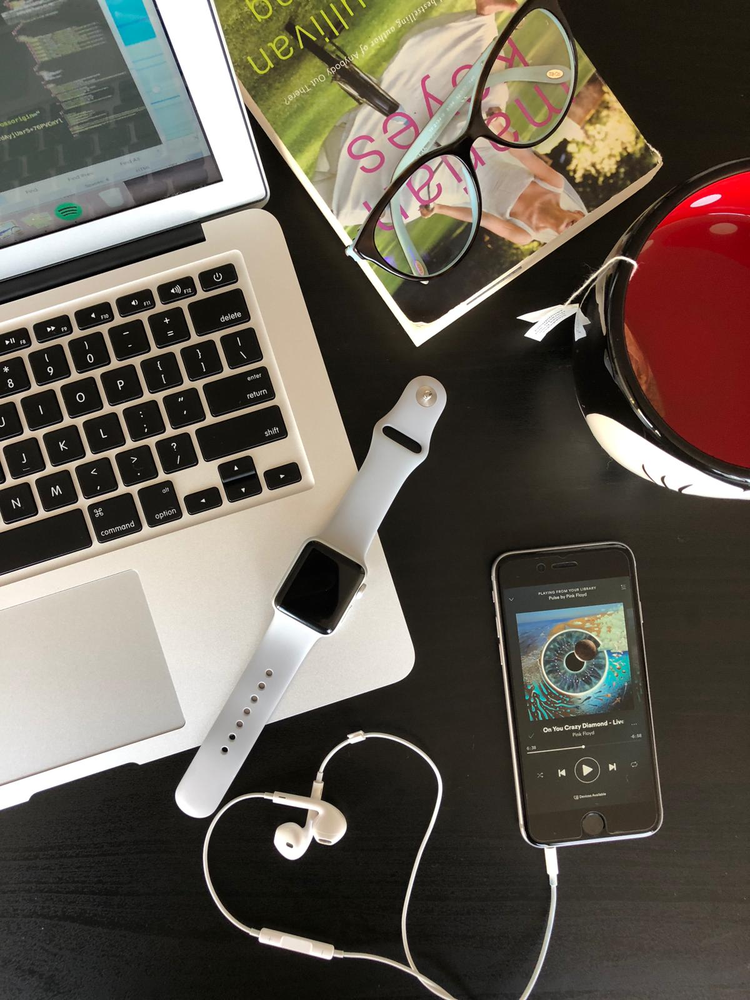

Brazilian living in Canada, who works better listening music (all kind of)
Born in: Cruz Alta/RS - BR
Lived in: Caxias do Sul/RS and POA/RS- BR
Living in: Vancouver/BC - CA
Personal interests:
Tea
Music
Books
Technology to help people lives better
WORK EXPERIENCE
Business Analyst
Business analyst from core banking team.
Understands the business problems and needs, gathers, documents and analyzes the solution and the escope of the project.
Facilitating to solve challenges involving negotiation between businesses team and technical team.
Worked with developers, testers and project manager to fit the best deadline and project blueprint.
I was responsible for business tests and business rules validations.
Sicredi - Credit Cooperative
Business Specialist
Business specialist from consortium team. I was responsable to understands the business team needs, documents the requirements and requested changes. Testing results and create system documentation. Agiplan - Bank
Business/System Analyst
Business/system analyst in ITS System working in Topázio Bank.
Understands the business team requirements in Topázio Bank, writing the business rules and assisting to fit the best solution for the company.
Topázio - Bank
System Analyst
I worked in analysis team in many different projects, clients and business.
I was responsible for all the business and technical documentation in the projects that I worked, as the business requiriments, UML diagrams, database model, mockup and wireframe design.
Stefanini - IT Consulting
Business Analyst
Levantamento de requisitos junto aos usuários, testes e acompanhamento de demandas evolutivas e
corretivas do sistema comercial junto a fornecedores (fábricas de software).
Organização e gerenciamento de projetos baseados nos princípios do PMBOK® relacionados a diversas
áreas.
Acompanhamento de auditorias internas e externas (SOX).
Levantamento de requisitos junto aos usuários, testes e acompanhamento das demandas evolutivas e
corretivas do sistema comercial e mobilidade junto a fornecedores (fábricas de software).
RGE - Energy Distribution
SKILLS
PROJECTS
Consortium BPM
Software maintenance Consortium
Money transfer (MoneyGram)
AGCO Parts
EST
Energy SMS
QA - SOX(business energy)
COURSES
College
jan 2018 - dec 2019 - (in progress)
Cornerstone